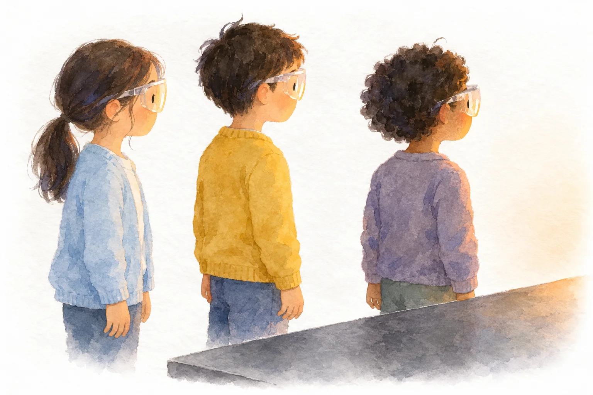

Board
板書計画
マス目プリントメーカーの板書計画で作りました。黒板の下の3つの欄は「発問と、予想される反応」です。編集用ファイルは、マス目プリントメーカーの「ひらく」で読みこむと、そのまま直せます。

第8時 第３次【本時】 金ぞく②
Lesson 08
金ぞくの玉をあたためると、輪を通らなくなるのだろうか

Lesson 8 / Warm it, heat it
Aim
学習活動・湯であたためて調べる。
・炎で熱したり、冷やしたりして調べる。（実験３）
目指す児童の姿湯でも玉が通った結果と予想とのずれから、あたため方を見直し、加熱器具を安全に扱いながら結果を記録している。
指導案の着眼１の表（第３次【本時】）より。第◯次の中での時間の割りふりは案です。
On screen
この時間の問い
金ぞくの玉をあたためると、輪を通らなくなるのだろうか
問題は、子どもとつくってから映します。ふりがなは、この欄だけに付けています。
Flow
Experiment
Board
マス目プリントメーカーの板書計画で作りました。黒板の下の3つの欄は「発問と、予想される反応」です。編集用ファイルは、マス目プリントメーカーの「ひらく」で読みこむと、そのまま直せます。
Wrap up